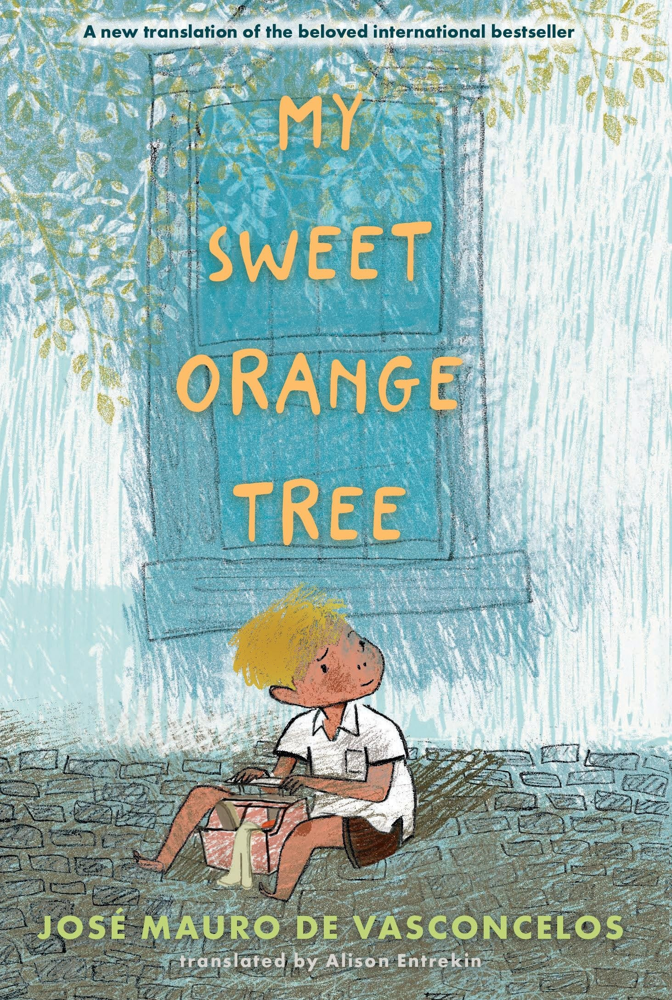

LITERARY FICTION
My Sweet Orange Tree (Meu Pé de Laranja Lima)
José Mauro de Vasconcelos · 1968
A Brazilian coming-of-age classic about imagination, tenderness, and childhood.
ACADEMIC & PROFESSIONAL CV
Business Analytics · Health Informatics · Applied NLP
Hanoi, Vietnam
Business Analytics graduate applying data engineering and NLP to health informatics and fintech research. Experienced in data governance, interoperable health data, and analytical pipelines.
Bachelor in Business Analytics · GPA 3.67/4.00
Thesis: Understanding Fintech Services Evolution in Vietnam; applied BERT-based classification and topic modeling to a 216 MB Vietnamese news dataset. Grade: 9.5/10.
Business Analyst · Health Informatics Analyst
Data Analyst Intern
Designed a pipeline for Vietnamese fintech news collection and downstream NLP using Python, Docker, Kafka, PostgreSQL, MinIO, and Spark SQL.
Co-author of a text-mining review in the International Journal of Innovative Research and Scientific Studies. DOI: 10.53894/ijirss.v9i6.11737 ↗
Languages & analysis: Python, R, SQL, Excel, SPSS
Data & visualization: ETL, PostgreSQL, PySpark, OpenMetadata, Tableau, Power BI, Apache Superset, Looker, Google Sheets
PORTFOLIO
Research, projects, and the questions that keep me curious.
A record of how I explore data, work through unfamiliar problems, and learn from each experience.
15 activities
No activities match these filters.
MY LITTLE LIBRARY
Books to think with, grow with, and pass along.
A growing shelf of fiction, data, and ideas worth returning to.
ON THE SHELF

LITERARY FICTION
José Mauro de Vasconcelos · 1968
A Brazilian coming-of-age classic about imagination, tenderness, and childhood.

DATA SCIENCE
Joel Grus · 2019
Data science fundamentals built from first principles in Python.

TEXT ANALYTICS
Taeho Jo · 2024
Techniques for finding patterns and meaning in text.

SYSTEMS & STRATEGY
Beth Gold-Bernstein & William Ruh · July 2004
Practical approaches to connecting systems across an organization.

VIETNAMESE LITERATURE
Vũ Trọng Phụng · 1936
A satire of status and modernization in colonial Vietnam.
READING, REMEMBERING, RETURNING
Stories and ideas that invite a second look.
MY SOUNDTRACK
A little focus, a little feeling, a little main-character energy.
PERSONAL MIXES